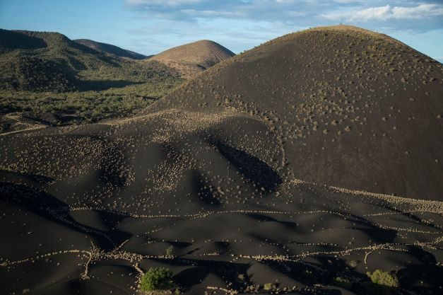
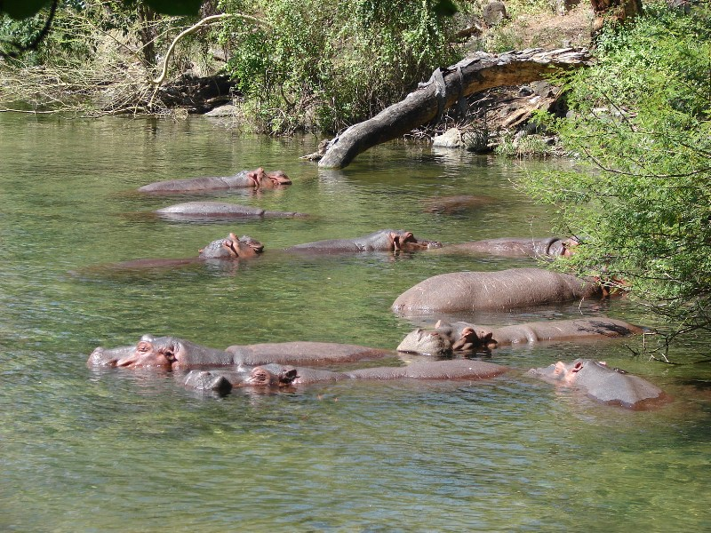
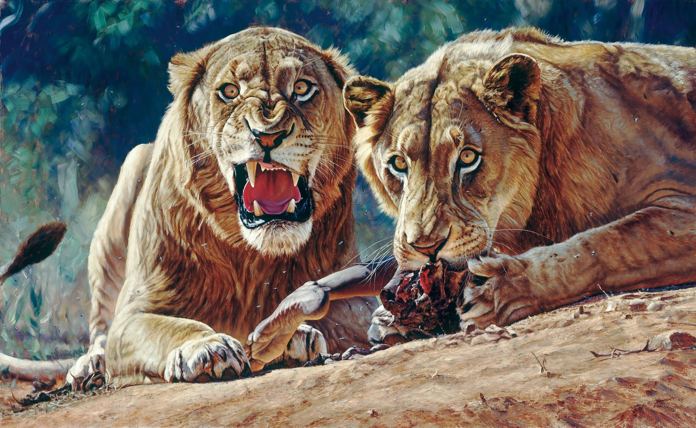

Tsavo is Kenya’s largest national park, known for its dramatic landscapes, volcanic formations, and abundant wildlife. The park is home to the famous red elephants, lions, and diverse bird species.
Tsavo is Kenya’s largest national park, known for its dramatic landscapes, volcanic formations, and abundant wildlife. The park is home to the famous red elephants, lions, and diverse bird species.

Mzima Springs is a series of crystal-clear natural pools nestled within the heart of Tsavo National Park, providing a vital freshwater source to the region. Fed by underground streams from the Chyulu Hills, these pristine waters emerge in a lush oasis surrounded by towering fig trees, palms, and vibrant vegetation. The springs create a serene and picturesque environment, attracting an abundance of wildlife, including hippos that wallow peacefully in the pools, crocodiles lurking beneath the surface, and various fish species darting through the water. Additionally, the surrounding area is home to a rich array of birdlife, from kingfishers and herons to cormorants perched along the banks. Visitors can explore the springs via scenic walking trails, viewing platforms, and an underwater observation chamber that offers a rare glimpse into the aquatic world. With its tranquil beauty, diverse wildlife, and ecological significance, Mzima Springs is an unmissable destination for nature lovers and adventurers alike.


Tsavo is historically known for the infamous "Man-Eaters of Tsavo"—a pair of ferocious, maneless lions that terrorized railway workers during the construction of the Kenya-Uganda Railway in the late 19th century. Between March and December 1898, these lions were responsible for the deaths of dozens of workers, sparking fear and disrupting the railway project. Lieutenant Colonel John Henry Patterson, who was overseeing the construction, eventually tracked and killed both lions, but their legend continues to captivate historians, wildlife enthusiasts, and storytellers alike. Beyond the chilling tale of the man-eaters, Tsavo's history is steeped in mystery and adventure. The park, one of Kenya’s largest and oldest, has long been a crossroads for traders, explorers, and indigenous communities who relied on its vast landscapes for survival. Its rugged terrain, volcanic hills, ancient lava flows, and dense woodlands create an aura of raw, untamed wilderness. The remnants of historical railway bridges and colonial-era sites further add to its rich heritage, making Tsavo not just a wildlife haven but also a place where history and legend intertwine, drawing visitors eager to uncover its secrets.